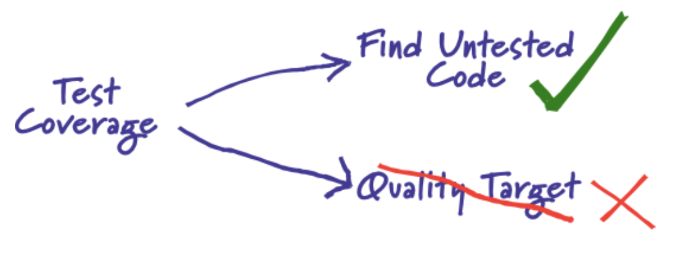
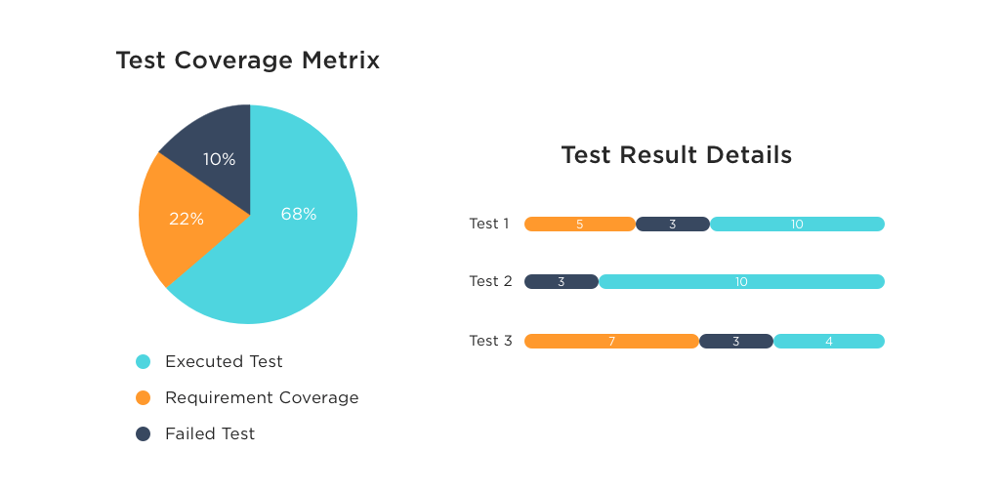
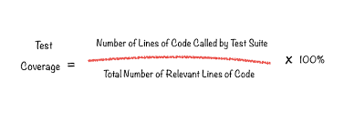
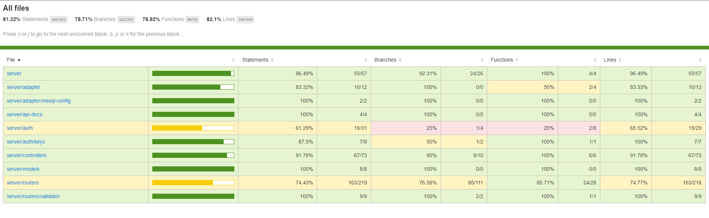

Test Coverage¶
Concepts¶
Test coverage là một kỹ thuật black-box testing xác định xem các test case có thực sự coverage - bao phủ gần như toàn bộ source code của ứng dụng hay không và bao nhiêu scripts được thực hiện khi chạy các test case đó. Ví dụ có 10 cái unit cần test và 100 test case được tạo ra để test cho 10 cái unit này. Nếu 100 test case này chỉ test toàn bộ code của 90% trong 10 cái unit, còn 10% code của các unit không test được thì coverage là 90%. Các con số phần trăm này gọi là Test coverage metrics và dựa trên số liệu, thống kê này, ta có thể tạo thêm các test case bổ sung cho các unit còn lại chưa được test và đánh giá mức độ bao phủ của test suite đang áp dụng cho dự án.
Có một concept tương tự với Test coverage là Code Coverage, đều là các kỹ thuật đo lường cho phép ta đánh giá chất lượng source code trong ứng dụng của mình. Dưới đây là một số điểm khác biệt quan trọng giữa Test coverage và Code Coverage:
| Parameters | Code Coverage | Test Coverage |
|---|---|---|
| Definition | Code coverage kiểm tra các application code được thực thi lúc ứng dụng đang chạy. | Test coverage kiểm tra sự tổng thể của test-plan. |
| Goal | Tạo ra Code coverage metrics giúp cả team giám sát các automated tests. |
Tạo ra Test coverage metrics cung cấp chi tiết về mức độ bao phủ của việc viết test cho ứng dụng. |
| Subtypes | statement coverage, condition coverage, branch coverage, loop coverage, FSM coverage. |
Không có subtype method. |
Tóm lại:
Test Coverage
Test Coverage is “What are we testing and How much are we testing?”

Benefits of Test Coverage¶

-
Phát hiện những khu vực của một requirement không được thực hiện bởi
set of test cases, từ đó giúp ta tạo các test case bổ sung để tăng mức độ phù hợp củaset of test casesvới phần mềm. -
Xác định thước đo định lượng về test coverage, là một phương pháp gián tiếp để quality check cho phần mềm
-
Phát hiện các test case vô nghĩa, không hỗ trợ cho việc increase coverage
-
Đảm bảo
quality of the testcho phần mềm -
Ngăn chặn Defect leakage -
Defecttrong kiểm thử phần mềm là một biến thể hoặc sai lệch của phần mềm so với yêu cầu ban đầu của end-user hoặc business requirements
How To Perform Test Coverage?¶
Test coverage mechanisms¶
Test coverage sẽ được evaluated dựa trên các types of testing, tuy nhiên nó còn phụ thuộc vào các business priorities, của organization và của testing team. Ví dụ: các ứng dụng web user-centric - lấy user làm trung tâm thì sẽ ưu tiên các UI/UX tests hơn các functional tests. Ngược lại, các ứng dụng tài chính sẽ ưu tiên system testing và security testing hơn các types of testing khác. Dưới đây là một vài test coverage mechanisms:
-
Unit Testing -
Functional Testing -
Acceptance Testing -
Integration Testing
Types of Test Coverage¶
Kết quả của Test coverage sẽ khác nhau tùy thuộc vào level mà tests được performed ở trên. Ngoài ra thì nó cũng phụ thuộc vào type of software dùng để kiểm thử phần mềm. Các chỉ số của Test coverage metrics về cho điện thoại di động cũng sẽ khác với các chỉ số của Test coverage metrics trên web. Dưới đây là một số loại test coverage phổ biến:
-
Features Coverage: Các test cases tạo ra tập trung vào maximum coverage choproduct features. -
Risk Coverage: Cácproduct requirement documentcần đề cập đến những rủi ro liên quan đến dự án và Risk Coverage sẽ cố gắng bao phủ tất cả các risk test của dự án để giảm thiểu những rủi ro này. -
Requirements Coverage: Các test cases tạo ra tập trung vào maximum coverage choproduct requirementsdựa vào cácrequirement documents.
Formula to calculate Test Coverage¶
Các tool để test coverage đều dựa trên công thức dưới đây để tạo ra Test coverage metrics:

-
Bước 1: Tổng số X dòng code trong Test Suite của ứng dụng
-
Bước 2: Tổng số Y dòng code được Test Suite áp dụng để test, thường là source code của system component hay một service đang trong giai đoạn kiểm thử.
-
Bước 3: Lấy X chi Y nhân 100% để ra được số phần trăm coverage của Test Suite.
Ví dụ tổng số dòng code trong một system component là 500 lines và số dòng code được thực thi trên tất cả các test case hiện có là 50, thì phạm test coverage là (50 / 500) * 100 = 10%
How to Improve Test Coverage?¶
Remove Dead Code¶
Dựa trên Test coverage metrics được tính như trên, ta có tỷ số covered_code/total_code. Ta có thể tăng mức độ coverage bằng cách giảm total_code và tăng covered_code. Điều này có thể thực hiện được bằng cách loại bỏ các Dead Code như debugging code, logging code không cần thiết. Bằng cách Remove Dead Code này, ta có thể tăng tổng tỷ lệ coverage của ứng mình mà không cần viết thêm bất kỳ test case mới nào.
Remove Redundant/Cloned Code¶
Tương tự như Remove Dead Code, việc bỏ bớt các block code bị trùng lắp, cloned code trong dự án có thể tăng tỷ lệ coverage và giảm kích thước source code của dự án.
Increase device coverage¶
Hiện nay có rất nhiều devices, OS versions, browsers, cho nên việc xác định được các ứng dụng chủ yếu dùng trên thiết bị gì, OS nào, version chính là bao nhiêu, hỗ trợ trình duyệt gì là cực kỳ quan trọng. Lấy ví dụ để tối ưu hóa việc test coverage trên mobile app, ta có thể sủ dụng công cụ Perfecto Mobile phân tích mức độ sử dụng của thị trường và xem xét các thiết bị trên thị trường từ nhiều góc độ khác nhau. Dựa vào đó ta xây dựng một bộ test suite tập trung vào các thiết bị này để tối ưu hóa việc test coverage cho ứng dụng.
Example¶
Một Test Coverage Metris sẽ được report kiểu:

Ví dụ trên là một Coverage Reporter trong MERN app dùng nyc trên Mocha and Chai, nyc sẽ gen ra một Coverage Reporter dưới dạng static web sau khi run test từ Mocha & Chai, sau đó mình lấy static web này deploy lên GitHub Pages, xem tại: https://smoothkt4951.github.io/KT-Ecommerce/